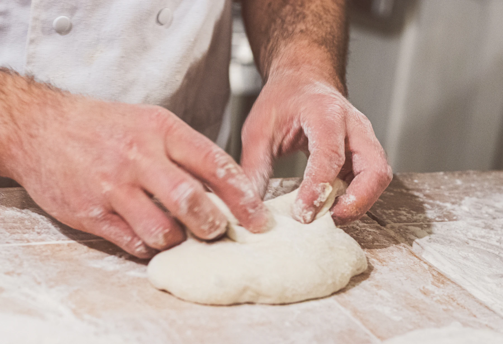

02／私たち
父の「いつもの」を、
私が次の朝へ。
父が沖浜町に店を開いたのは、1999年の春でした。私は小学生で、学校から帰ると袋を折るのが手伝いでした。
店を継いでからも、角食とあんパンの配合は変えていません。変えたのは、金曜日に全国便を焼くようになったこと。県外へ越した昔のお客さまから「また食べたい」と手紙をいただいたのがきっかけです。
朝に顔を合わせる方にも、遠くで箱を待つ方にも、同じオーブンからお届けします。
二代目 店主（架空）田村 菜穂
「塩パンを一つ」だった小学生が、今は自分の子どもと来てくれます。常連のお客さまの声（架空）